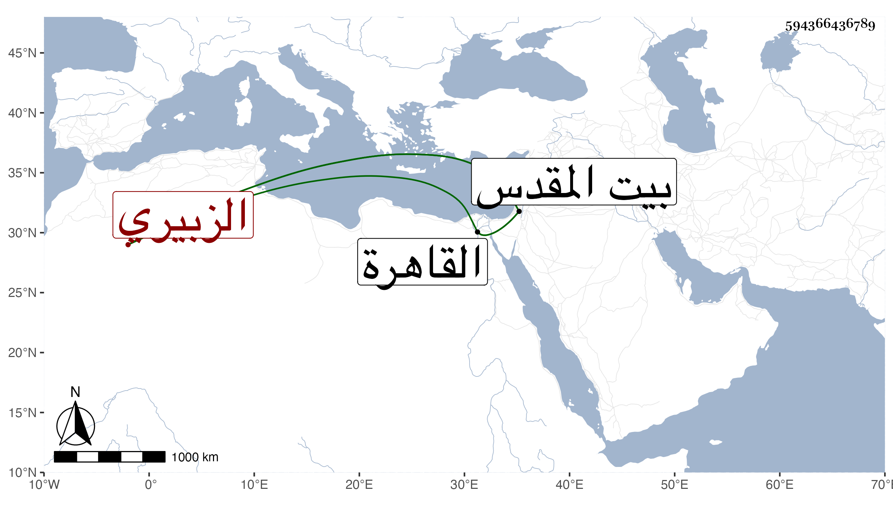

0902Sakhawi.DawLamic.ITO20230111-ara1.EIS1600.594366436789
Biography ID: 594366436789
أحمد بن حسين بن علي الشهاب أبو البقاء الزبيري . ولد في حدود السبعين وسبعمائة أو قبلها بصعيد مصر وقدم القاهرة فلازم حلقة البلقيني مدة طويلة والعراقي وسمع عليه كثيرا وابن الملقن واستفاد من كلامه والهيثمي والتنوخي وغيرهم كالأبناسي وابن العراقي والكمال الدميري والعراقي والشطنوفي والشهاب العاملي والبيجوري والبرماويين وآخرين ممن أخذ عنهم العلم وسمع عليهم الحديث وفضل وقدم بيت المقدس بعد الثلاثين وثمانمائة واشتغل في النحو وصحب ابن رسلان وتنزل بمدارس الفقهاء ثم انقطع بالمدرسة الطولونية مشتغلا بالعبادة مع الزهد والعلم ولما قدم التقي بن قاضي شهبة إلى القدس مشى إلى الطولونية لزيارته وكذا أخذ عنه العلاء بن السيد عفيف الدين في سنة خمسين . مات في ربيع الأول سنة أربع وخمسين وحضر جنازته غالب أهل البلد ودفن بباب الرحمة ورجع مبارك شاه النائب منها فسقط عن فرسه بحيث توهم إما الموت أو فساد بعض أعضائه فلم يقع شيء منهما وعد ذلك من كراماته .
